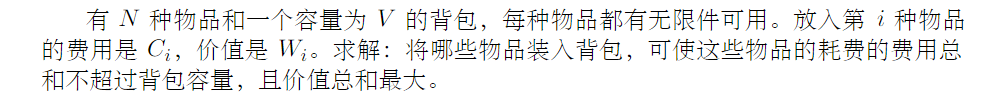

动态规划方法就是有规律的记忆化搜索方法。一般可以从穷竭搜索中总结出来。
动态规划还可以解决许多排列组合问题。
0-1背包问题

使用穷竭搜索
1 |
|
使用动态规划
动态规划的递推公式实际上可以从上面的穷竭搜索中得到。
rec(i,j) 表示从第i个物体开始，在不超过j的重量的情况下，最大的价值是多少
设置dp[i][j] = rec(i,j); 则可以知道dp[n][j] = 0; 因为最多只有n-1个物体；dp[i][j] = dp[i+1][j] 当第i个物体的重量大于j的时候；dp[i][i] = max( dp[i+1][j] , dp[i+1][j-w[i]]+v[i] ) 当第i个物体能够装进去的时候，分别尝试装入和不装入，取最大值。1
2
3
4
5
6
7
8
9
10
11
12
13
14
15
16
17
18
19
20
21
22/**
* 背包问题的动态规划解法
* @param w
* @param v
* @param weight
* @return
*/
int dp(vector<int> w,vector<int> v,int weight){
int n = w.size();
vector<vector<int>> dp(n+1,vector<int>(weight+1));
for(int i=n;i>=0;i--){
for(int j=0;j<weight+1;j++){
if(w[i] > j){
dp[i][j] = dp[i+1][j];
}else{
dp[i][j] = max(dp[i+1][j],dp[i+1][j-w[i]] + v[i]);
}
}
}
print2(dp);
return dp[0][weight];
}
使用状态转移的观点
1 | /** |
完全背包问题

完全背包问题可以这样建立递推关系；
dp[i][j] 表示前i-1个物体放入背包，总重量不超过j的情况下的最大价值。i=0时表示没有物体。
w[i] 和 v[i] 表示第i个物体的重量和价值。注意这里dp中的i和w,v中的i相差1.也就是dp[i+1]对应的物体的重量和价值分别是w[i],v[i];1
2
3
4dp[i+1][j] := dp[i][j] 第i个物体不放入背包
:= dp[i][j-1*w[i]] + v[i] 第i个物体放入1次的时候
:= dp[i][j-2*w[i]] + 2*v[i] 第i个物体放入2次的时候
...
上面的递推关系虽然容易理解，却存在这循环，有重复计算的地方。递推关系还可以定义如下：
dp[i+1][j] = dp[i][j] ; 第i个物体无法放入背包的情况
dp[i+1][j] = d[i+1][j-w[i]] + v[i] ; 如果第i个物体可以放入背包，那么最大价值等于 在dp[i+1][j-w[i]]的基础上再放入一个i物品，这时的价值是dp[i+1][j-w[i]] + v[i];
所以最后的递推关系可以写成：
dp[0][j] = 0;
dp[i+1][j] = max(dp[i][j],dp[i+1][j-w[i]] + v[i])
完全背包问题
1 | /** |
以上背包的问题的时间复杂度都可以优化到O（nW）也就是物品数量 * 背包容量，空间复杂度可以优化到O（n）.
一般情况下，这样的时间复杂度足够了。但是针对下面这道题，时间复杂度就不够用了，需要另外寻找解题的方法。
有n个重量和价值分别为w[i],v[i]的物品，装入容量为W的背包，求最大价值。
限制条件：
n : 1–100 ; w[i] : 1–10000000 ; v[i] : 1–100; W : 1–1000000000
原来背包问题的时间复杂度是O(nW),但是本题’故意’把W设置的很大，使得不能使用原来的方法求解。
仔细分析数据的取值范围发现，v[i]的范围比较小，我们可以转换思路，求解总重量不超过W的情况下价值的最大值，
就是求解相同价值下的总重量的最小值。
dp[i][j] 表示前i-1个物体在价值不超过j的时候的总重量的最小值。
dp[0][j] = INF; 把不存在最小值的情况设置为最大值，这样是方便用min();
dp[0][0] = 0 ;
dp[i+1][j] = min(dp[i][j],dp[i][j-v[i]]+w[i])
1 | /** |
单词切分
给出一个字符串s和一个词典，判断字符串s是否可以被空格切分成一个或多个出现在字典中的单词。
样例
给出
s = “lintcode”
dict = [“lint”,”code”]
返回 true 因为”lintcode”可以被空格切分成”lint code”
思路一：开一个dp[n+1]表示前i个字母能否用空格分割开(按照字典里面给出的单词)。dp[0]=true表示空字符串能够分割开，dp[1]=true当s[0]在字典中存在时。对于dp[j]来说，逐个向前搜索，看是否有s[i,j]存在与dict中的同时dp[i-1]为真。如果有，dp[j]=true,如果搜索到头还没有，dp[j]=false.这种方法最容易想到，但是时间复杂度高。(不能通过lintcode的所有测试用例)
1 | //[单词切分](http://lintcode.com/zh-cn/problem/word-break/) |
思路二：上面的算法每次都会回溯到第一个字符，如果字典的最大的字符的长度远远小于字符串的长度(很常见的情况)，会造成大量的浪费，所以可以改进一下，每次只回溯到字典中最大的字符串长度处，这样就能通过lintcode的大规模的数据了。getMaxLen用来获取字典中最长的字符串的长度。但是该方法当dict中最大字符串的长度很长时，时间复杂度并没有降低。
1 | int getMaxLen( unordered_set<string> &dict){ |
换钱的方法数

思路： 动态规划。dp[i][j]表示用前i种面值的钱组成j总共有多少中方案。设钱币的面值一共有N中，组成的面值为M，则需要N*(M+1)的数组。第一行表示使用第一种面值的货币组成目标值的方法数量，当j能够被整除时，方法数量为1，否则为0. 第一列表示组成目标值0有多少种情况，无论有几种面值的货币，只有一种方法，就是一个都不用。
递推公式：
dp[i][j] = dp[i-1][j] if j < v[i], (当面值为v[i]的货币比目标值还要大的时候，肯定一张v[i]都不能使用，这个时候方法数量等于dp[-1][j]).dp[i][j] = dp[i-1][j] + dp[i][j-v[i]] if j >= v[i], (如果目标值比面值为v[i]的钱大，则意味着可以使用v[i]若干次，一直到超过目标值； 在这种情况下，组成目标值的总方法数量为以下几种情况的和： 不使用第i中货币组成j, 方法数量是dp[i-1][j]; 使用第i种货币组成j的数量，dp[i][j-v[i]], 这个式子可以这样理解： 首先使用一张v[i],然后用前i中货币组成剩下的j-v[i]目标值，这个值之前计算过，可以直接写出来，就是dp[i][j-v[i]];
1 |
|